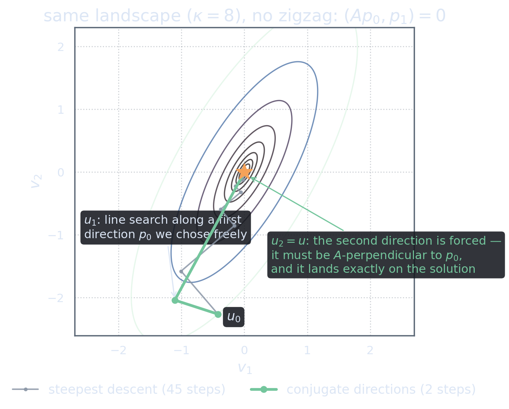

The Design Specification
Acts 2 and 3 leave us holding a precise design brief. We want a method that, like steepest descent, is built from line searches (they are cheap, and the parabola formula makes them exact), but whose directions \(p_0, p_1, p_2, \dots\) are chosen so that no line search can damage an earlier one. Act 3 told us exactly what that requires: \[\ipA{p_i}{p_j} = \ip{Ap_i}{p_j} = 0 \qquad\text{for all } i\neq j.\] A family of directions satisfying this is called \(A\)-conjugate (or just conjugate). For the moment, suppose someone hands us such a family , where it comes from is Act 5’s problem, and respecting that order of questions is exactly how the classical authors got here too: the general “method of conjugate directions” (the cd-method) is set up before conjugate gradients in the original paper of Hestenes and Stiefel [HS52], §§3–4.
One small generalization of Act 2 is needed: the line search along an arbitrary direction \(p_k\) (not necessarily the residual). The master identity with \(w = \alpha p_k\) gives \[J(u_k + \alpha p_k) = J(u_k) - \alpha\ip{r_k}{p_k} + \tfrac{\alpha^2}{2}\ip{Ap_k}{p_k},\] an upward parabola again, with minimum at \[\alpha_k = \frac{\ip{r_k}{p_k}}{\ip{Ap_k}{p_k}},\] and, exactly as before, the stopping condition of the search reads \(\ip{r_{k+1}}{p_k} = 0\): the new residual is orthogonal (plain, Euclidean orthogonal!) to the direction just searched.
Given \(u_0\) and pairwise \(A\)-conjugate directions \(p_0,p_1,p_2,\dots\); compute \(r_0 = f-Au_0\), then for \(k=0,1,2,\dots\): \begin{align*} \alpha_k &= \frac{\ip{r_k}{p_k}}{\ip{Ap_k}{p_k}},\\ u_{k+1} &= u_k + \alpha_k p_k,\\ r_{k+1} &= r_k - \alpha_k A p_k. \end{align*}
What Permanence Buys: the Expanding-Subspace Theorem
Now let us cash the design in. The claim is that the no-spoiling property upgrades the method from “greedy on a line” to “optimal on an ever-growing subspace”:
After \(k\) steps of the conjugate directions method, \[\ip{r_k}{p_j} = 0 \quad\text{for all } j < k,\] and consequently \(u_k\) minimizes \(J\) over the entire affine subspace \[u_0 + \spanop\{p_0, p_1, \dots, p_{k-1}\}.\] Progress is cumulative: each direction is dealt with once, and stays dealt with forever.
(The orthogonality statement is Theorem 4:1 of [HS52]; the “expanding subspace” framing and name follow Luenberger , see [LY16], the chapter on conjugate direction methods.)
The proof is short enough to enjoy. We show \(\ip{r_k}{p_j}=0\) for \(j<k\) by induction on \(k\). For \(j = k-1\) this is just the stopping condition of the most recent line search. For \(j < k-1\), use the residual update: \[\ip{r_k}{p_j} = \ip{r_{k-1} - \alpha_{k-1}Ap_{k-1}}{p_j} = \underbrace{\ip{r_{k-1}}{p_j}}_{=\,0\ \text{(induction)}} \;-\; \alpha_{k-1}\underbrace{\ip{Ap_{k-1}}{p_j}}_{=\,0\ \text{(conjugacy)}} = 0.\] Both kill shots are exactly the two ingredients we designed in: line searches give the first zero, conjugacy the second. Nothing else is used.
Why does residual-orthogonality mean minimization over the whole subspace? Because \(J\) restricted to the affine subspace is again a bowl, and its minimum is characterized by the derivative vanishing along every direction of the subspace: \(\ip{Au_k - f}{p_j} = -\ip{r_k}{p_j} = 0\) for each \(j<k\). That is precisely what we proved.
Steepest descent answers one question per step and then forgets it. Conjugate directions answer one question per step and keep every previous answer. After \(k\) steps, \(k\) questions are permanently closed, the method is provably the best it could possibly be using those \(k\) directions.
Finite termination
In an \(n\)-dimensional space, the payoff is spectacular. Conjugate directions are automatically linearly independent (if \(\sum_j c_j p_j = 0\), taking the \(A\)-inner product with \(p_i\) forces \(c_i\ip{Ap_i}{p_i}=0\), so \(c_i=0\)); \(n\) of them span the whole space, and after \(n\) steps the residual is orthogonal to everything, which forces \(r_n = 0\): \[\text{the method solves an } n\text{-dimensional problem in exactly } n \text{ steps. No } \kappa \text{ anywhere.}\]
Compare this with Act 2’s arithmetic: steepest descent needed 11,500 steps per digit at \(\kappa=10^4\); conjugate directions need \(n\) steps, total, at any \(\kappa\) whatsoever. The condition number has not been beaten yet, it will sneak back in Act 6 when we truncate early, but the pathology of the staircase is gone at the root.
See It: Any First Direction, Two Steps
On our two-dimensional playground, the theorem says something almost provocative: whatever first direction \(p_0\) you pick, steep, shallow, absurd, the conjugacy condition determines \(p_1\), and the second line search lands exactly on the solution. Try to break it:

Recall the stretched world of Act 3: conjugate directions are perpendicular on the honest map. On that map, the two steps you are watching are utterly boring, walk along one axis of a round bowl, then along the perpendicular axis, done. All the apparent cleverness in the original coordinates is just ordinary Cartesian common sense, transported through the lens \(A^{1/2}\). Good methods usually look like this: obvious in the right variables, magical in the wrong ones.
The One Missing Ingredient
Let us take honest inventory of what we have and what we lack.
Have: a complete, provably optimal iteration, given a conjugate family \(\{p_k\}\).
Lack: the family. And the obvious ways to get one are all disqualified by the black-box constraint of Act 1:
- Eigenvectors of \(A\) are conjugate (even orthogonal), but computing them is vastly harder than solving \(Au=f\).
- Gram–Schmidt on a fixed basis (\(A\)-orthogonalize \(e_1, e_2, \dots\)) works in principle, but each new direction must be orthogonalized against all previous ones: the cost grows quadratically, every direction must be stored, and in an infinite-dimensional \(\H\) there is no finite basis to start from.
- Choosing directions in advance ignores everything the iteration learns along the way. The landscape talks to us at every step , through the residual, and a pre-committed basis refuses to listen.
Conjugate line searches make progress permanent, minimize over an expanding subspace, and terminate in \(n\) steps in \(n\) dimensions. The sole remaining question: where do conjugate directions come from, at black-box prices?
The answer will come from the only place it can: the residuals, the one new piece of information each iteration produces. In Act 5 we \(A\)-orthogonalize the residual stream, and discover that the infinitely long Gram–Schmidt formula collapses, by structure and not by luck, to two terms. That collapse is the conjugate gradient method.
References
- Magnus R. Hestenes and Eduard Stiefel (1952). “Methods of Conjugate Gradients for Solving Linear Systems.” Journal of Research of the National Bureau of Standards 49(6), 409–436. Conjugate directions and their orthogonality/termination properties: §§3–4 (Theorem 4:1 in particular). doi:10.6028/jres.049.044 · free PDF (NIST)
- David G. Luenberger and Yinyu Ye (2016). Linear and Nonlinear Programming, 4th edition. Springer. Conjugate direction methods and the expanding subspace theorem. doi:10.1007/978-3-319-18842-3